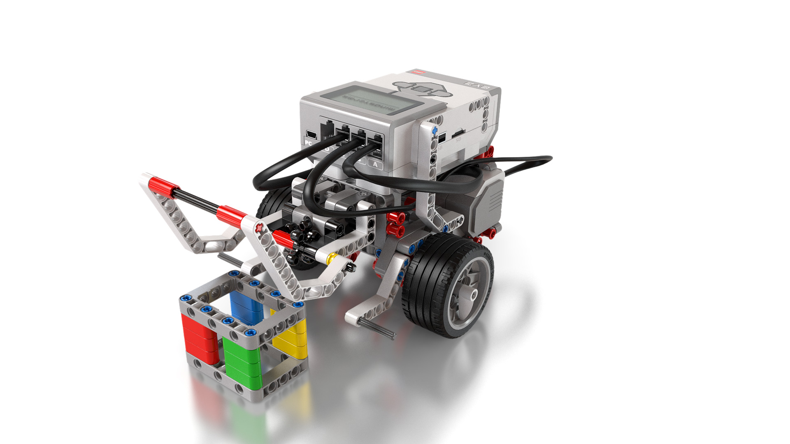

Produto educacional · UEPS · EV3
Da tabela-verdade
ao
robô em ação.
Um guia para professores de Matemática Computacional: seis encontros para planejar, construir, programar e explicar.
CONSTRUIR
PROGRAMAR
EXPLICAR

AND ∧ OR ∨ NOT ¬Um percurso de aprendizagem
A sequência, encontro a encontro
A proposta
Uma decisão pode ser
prevista, testada e explicada.
Quando um robô precisa reagir a um toque ou a uma distância, a lógica deixa de aparecer apenas no papel. O estudante define condições, prevê o resultado de uma operação e compara sua previsão com o comportamento do programa.
Este guia organiza uma Unidade de Ensino Potencialmente Significativa (UEPS) com robótica educacional. Foi elaborado a partir da dissertação de Jardel da Silva, no Mestrado Profissional em Ciências e Tecnologias na Educação do IFSul, Câmpus Pelotas–Visconde da Graça.
A experiência relatada envolveu nove estudantes do primeiro semestre do Curso Técnico em Desenvolvimento de Sistemas. O produto oferece um caminho para outros professores adaptarem a proposta; não promete os mesmos resultados em todas as turmas.
Antes de aplicar
Prepare o kit.
Planeje a mediação.
O professor não precisa dominar cada detalhe do EV3 para começar. Precisa testar o ambiente e saber o que deseja observar em cada encontro.
Abrir montagem e tutoriais-
01
Confira o ambiente
Teste bateria, cabos, motores, sensores e comunicação com o editor disponível. Os tutoriais usam o ambiente clássico; EV3 Classroom tem uma interface diferente.
-
02
Baixe os instrumentos
Separe diagnóstico, exercícios e questionário final. Originais e modelos complementares ficam identificados.
Acessar os apêndices -
03
Defina o que será uma condição
“Toque pressionado” pode ser A. “Distância menor que 10 cm” pode ser B. O sensor mede; o programa compara e decide.
Para consultar durante a aula
Roteiro, vídeo e material.
No mesmo encontro.
Prepare a aula pela ficha, consulte um tutorial quando precisar e mantenha a explicação em texto disponível se o vídeo não carregar.